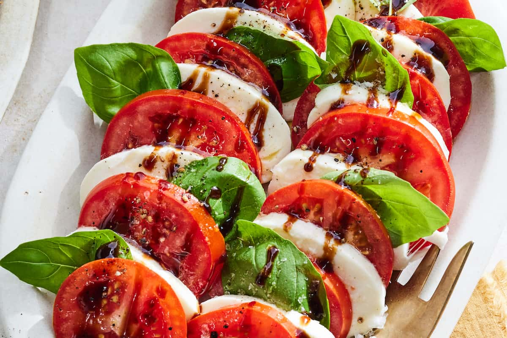

Caprese Salad

Description
A classic Italian salad, the Caprese Salad is a celebration of fresh flavors and simple ingredients. It showcases ripe tomatoes, creamy mozzarella cheese, and fragrant basil leaves, arranged in a beautiful pattern on a serving plate.
The salad is drizzled with olive oil and balsamic glaze, adding richness and depth to the dish. A sprinkle of salt and pepper enhances the sweetness of the tomatoes and the creaminess of the mozzarella.
This salad is light, refreshing, and perfect for showcasing the best of summer produce.
Ingredients
- 2 large tomatoes, sliced
- 1 ball fresh mozzarella cheese, sliced
- Fresh basil leaves
- Balsamic glaze
- Olive oil
- Salt and pepper to taste
Steps
- Heat vegetable oil in a large skillet or wok over medium-high heat.
- Add minced garlic and sliced onion, sauté until fragrant.
- Toss in broccoli florets, sliced bell pepper, and julienned carrot. Cook for 3-4 minutes until vegetables are tender-crisp.
- Pour soy sauce over the vegetables, stir well to combine.
- Season with salt and pepper to taste.
- Cook for another 1-2 minutes, then remove from heat.
- Serve hot as a side dish or over cooked rice.
HOME